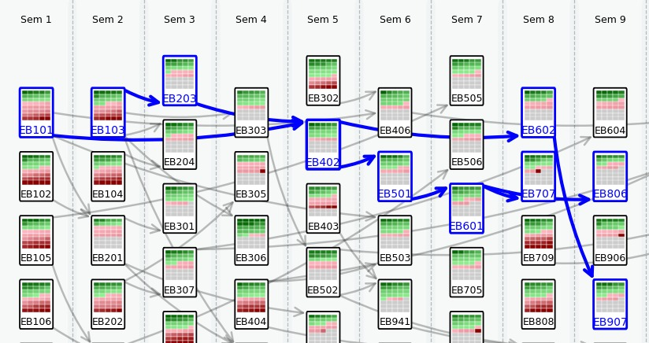
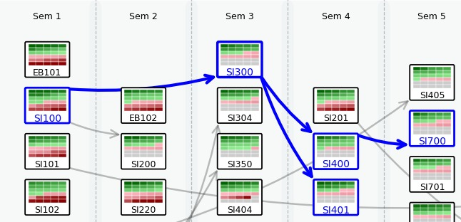
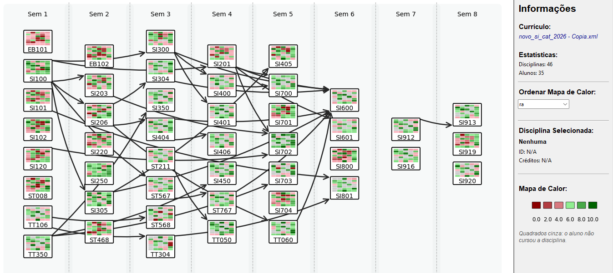

Curricular Viewer
Grafos acíclicos direcionados em camadas para visualização de múltiplos históricos escolares

Base Acadêmica
O projeto foi desenvolvido como Trabalho de Conclusão de Curso na Faculdade de Tecnologia da UNICAMP, com foco em:
Educational Data Mining (EDM)
Visual Learning Analytics (VLA)
Information Visualization (InfoVis)
Curriculum Prerequisite Networks
Problema que o Projeto Resolve
Coordenadores de curso normalmente analisam históricos escolares em planilhas extensas e tabelas alfanuméricas, o que dificulta identificar:
- disciplinas com altas taxas de reprovação;
- gargalos curriculares;
- impacto dos pré-requisitos na progressão acadêmica;
- trajetórias críticas de alunos;
- padrões de evasão e atraso na graduação.
O Curricular Viewer transforma esses dados em uma visualização interativa baseada em grafos direcionados, reduzindo a sobrecarga cognitiva durante a análise acadêmica.


Como o Sistema Funciona
O sistema processa dados curriculares (estruturados em XML) e registros acadêmicos (em formato CSV) de notas sintéticas geradas pelo sistema GradeGen.
Model (Lógica de Dados)
Desenvolvido em Python, lê e converte os arquivos estruturando as classes
Disciplina e Catálogo.
View (Desenho Técnico)
Bibliotecas matplotlib e networkx calculam a disposição dos nós e
arestas direcionais, aplicando mapas de calor.
Controller/GUI (Interface)
Interface em tkinter que permite interagir e visualizar a atualização dos dados
em tempo real.
Trecho do Código
Exemplo da montagem do Grafo Acíclico Direcionado (DAG) que compõe a espinha dorsal do projeto:
G = nx.DiGraph()
for disciplina in catalogo.disciplinas:
G.add_node(disciplina.codigo)
for prereq in disciplina.pre_requisitos:
G.add_edge(prereq, disciplina.codigo)
Conceitos Computacionais Aplicados
Grafos Acíclicos Direcionados (DAGs)
Utilizados para representar dependências entre disciplinas sem ciclos inválidos.
Layout em Camadas
Organização dos nós por semestre letivo para preservar a progressão temporal.
Mapas de Calor
Representação visual das notas e desempenho dos alunos integrados ao grafo.
Visualização de Informação
Aplicação de técnicas de redução de carga cognitiva em grandes volumes de dados.
Estruturas de Dados
Manipulação de árvores curriculares, listas de adjacência e relações de pré-requisito.
Interface e Interações


Desafios Técnicos
- Evitar sobreposição excessiva de arestas em múltiplos históricos.
- Preservar legibilidade visual mesmo com grande quantidade de nós.
- Representar simultaneamente desempenho acadêmico e relações de pré-requisito.
- Criar uma interface interativa com atualização dinâmica do grafo.
O que Aprendi
Esse projeto aprofundou meus conhecimentos em:
- Visualização de dados;
- Estruturas de grafos;
- Arquitetura MVC;
- UX para sistemas analíticos;
- Python aplicado à análise visual de dados;
- Pesquisa acadêmica e validação experimental.
Referências Bibliográficas
Principais trabalhos e sistemas que embasaram esta pesquisa:
-
Principal Base Teórica
Aldrich, P. R. The curriculum prerequisite network: Modeling the curriculum as a complex system. en. Biochem. Mol. Biol. Educ., Wiley, v. 43, n. 3, p. 168–180, mai. 2015. DOI: 10.1002/bmb.20861 - CURRICULAR Analytics. 2025. Disponível em: <https://curricularanalytics.org/home>. Acesso em: 14 mai. 2025
- Oliveira, G. A. de. GradeGen - Geração e adaptação de dados para sistemas de mineração de dados educacionais. 2020. Monografia (Trabalho de Conclusão de Curso) – Universidade Estadual de Campinas/FT, Limeira
- Silva, C. da; Inoue, M.; Mendonça, P. de. CourseViewer – Ferramenta para visualização de catálogos de cursos universitários e históricos escolares. In: ANAIS do VIII Simpósio Brasileiro de Sistemas de Informação. São Paulo: SBC, 2012. P. 341–352. DOI: 10.5753/sbsi.2012.14418. Disponível em: <https://sol.sbc.org.br/index.php/sbsi/article/view/14418>